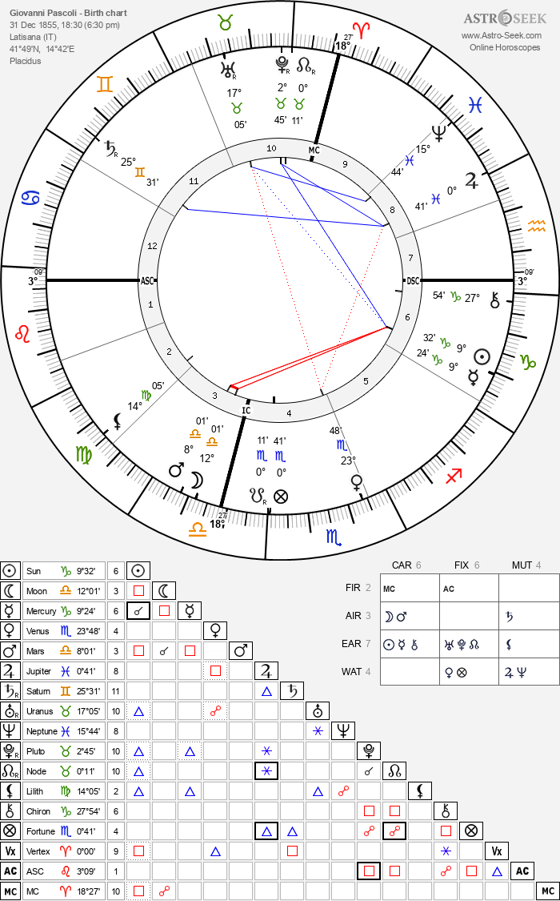

Il cielo racconta
Giovanni Pascoli
San Mauro, 31 dicembre 1855
🕊️TEMA NATALE DI GIOVANNI PASCOLI
NATO A SAN MAURO DI ROMAGNA
IL 31/12/1855 ALLE ORE 18:30
CAPRICORNO ASCENDENTE LEONE

Giovanni Pascoli: il Mistero del "Nido" e il Trauma Sigillato nel Cielo
Giovanni Pascoli è uno dei poeti più amati e studiati d'Italia. Tutti conoscono la sua ossessione per il "Nido" familiare e la tragedia del 10 agosto, il giorno in cui suo padre fu misteriosamente assassinato con una fucilata. Da quel momento, una scia infinita di lutti distrusse la sua famiglia.
Pascoli ha passato la vita a cercare di ricostruire quel nido con le sorelle, spinto da un attaccamento quasi morboso e tormentato. La psicologia ci parla di traumi irrisolti, ma l'astrologia va oltre: quell'irruzione violenta e i segreti più intimi del poeta erano già disegnati geometricamente nel suo cielo natale.
1. Il raggio distruttore sull'Adolescenza
Il trauma di Pascoli avviene a soli dodici anni, spezzando per sempre la sua spensieratezza e la sua giovinezza.
La firma delle stelle: Nel suo tema natale c'è una quadratura violentissima (un aspetto di massima tensione) che colpisce contemporaneamente la Terza Casa e il pianeta Mercurio.
Il segreto stupefacente: In astrologia, sia la Terza Casa che Mercurio governano proprio l'adolescenza e i fratelli. Il cielo mostra una "doppia ferita" micidiale esattamente sui simboli della giovinezza e dei legami fraterni, che infatti furono falciati da morti premature.
2. Marte nel grembo materno e la Famiglia in Clausura
La morte del padre non fu solo un dolore, ma un atto di pura violenza diurna che distrusse la sicurezza della casa.
Nel tema del poeta, la Luna (la madre, il nido) è fusa a Marte (il pianeta della violenza e delle ferite da arma da fuoco). L'irruzione della fucilata nel cuore del nido familiare è scritta qui con una precisione da brividi.
Inoltre, il segno del Cancro (che rappresenta la famiglia) si trova confinato nella Dodicesima Casa (il settore dell'isolamento e del sacrificio). Per Pascoli la famiglia non poteva essere una gioia pubblica, ma un dolore segreto, un santuario d'ombra in cui isolarsi dal mondo.
3. Il tabù di Ida: Venere in Scorpione e l'Ossessione del Nido
Nel 1885, Pascoli tenta l'impossibile: riprende a vivere con le sorelle minori, Ida e Maria, ricreando un nido dove lui fa da padre e Ida da madre. Ma quando Ida decide di sposarsi, il poeta cade in una depressione devastante e sprofonda nell'alcolismo. Perché il matrimonio di una sorella lo distrusse così?
La precisione chirurgica: Pascoli aveva Venere (l'amore, l'eros) nel segno erotico, tormentato e segreto dello Scorpione, esattamente opposta a Urano (la rottura improvvisa).
Questa Venere, in bilico tra la casa della famiglia e quella dell'eros, suggerisce un legame affettivo sotterraneo, di un'intensità talmente fuori dal comune da superare i confini del normale amore fraterno. Quando Urano ha spezzato quel legame, il nido è crollato di nuovo.
4. Il "Fanciullino" e il dialogo con i Morti
Le poesie di Pascoli sono famose per due motivi: l'ossessione per la morte e la capacità di guardare le piccole cose della natura con gli occhi meravigliati di un bambino (il "Fanciullino").
Il colpo di scena finale: La sua famosissima congiunzione Sole-Mercurio nella Sesta Casa (il settore dei dettagli e delle cose minute) gli dava la capacità di catalogare uccelli, piante e attrezzi agricoli con precisione scientifica.
Ma quel catalogo diventava magia grazie a Giove in Pesci nell'Ottava Casa (il regno della morte e dell'oltre). I Pesci cancellano i confini: le piccole cose della terra (Toro) venivano istantaneamente trasfigurate in un dialogo continuo con l'aldilà. I suoi versi non erano semplici poesie, erano squarci sull'invisibile.
🌟 Il verdetto delle stelle
Giovanni Pascoli non ha scelto di cantare il dolore e il nido: le forze del suo cielo lo hanno spinto a farlo. L'astrologia ci mostra che ogni sua ferita si è trasformata in un codice poetico immortale. Il nido che gli è stato strappato sulla terra, Pascoli lo ha ricostruito per sempre tra le stelle della sua poesia.